"""The Maximum Likelihood Estimation notebook."""
import requests
URL = "https://raw.githubusercontent.com/AstroStat-Academy/assets-public/main/colab/clone_and_cd_colab.py"
colab = requests.get(URL, timeout=30).text
exec(colab)
URL = "https://raw.githubusercontent.com/AstroStat-Academy/assets-public/main/styles/plot_style.py"
exec(requests.get(URL, timeout=30).text)
Imported matplotlib.
Imported seaborn.
Plotting style set.
Maximum Likelihood Estimation#
import numpy as np
import scipy.stats as st
import matplotlib.pyplot as plt
from astropy.table import Table
from scipy.optimize import minimize
from IPython.display import display, HTML
RR Lyrae stars in M4#
RR Lyrae stars are variable pulsators that obey a precise period-luminosity relation. Here we have a sample of RR Lyrae stars in the globular cluster M4, observed with Spitzer by Neeley et al. (2015): https://ui.adsabs.harvard.edu/abs/2015ApJ…808…11N/abstract
Since the stars are at the same distance, then the apparent magnitude will also depend on the period:
RR_lyrae_table2 = Table.read('./data/table2.dat', readme='./data/ReadMe', format='cds')
RR_lyrae = RR_lyrae_table2[RR_lyrae_table2['Mode'] == 'RRab']
# Now remove sources V20 and V21 due to blending
RR_lyrae = RR_lyrae[RR_lyrae['ID'] != 'V20']
RR_lyrae = RR_lyrae[RR_lyrae['ID'] != 'V21']
print("Columns:", RR_lyrae.colnames)
logP, m36, e_m36 = RR_lyrae["logP"], RR_lyrae['[3.6]'], RR_lyrae['e_[3.6]']
logP, m36, e_m36 = logP[~m36.mask], m36[~m36.mask], e_m36[~m36.mask]
Columns: ['ID', 'RAh', 'RAm', 'RAs', 'DE-', 'DEd', 'DEm', 'DEs', 'Per', 'logP', '[3.6]', 'e_[3.6]', 'f_[3.6]', '[4.5]', 'e_[4.5]', 'f_[4.5]', '3.6amp', 'e_3.6amp', '4.5amp', 'e_4.5amp', 'Mode', 'f_Mode']
RR Lyrae: The data#
Let’s plot the data from the 3.6μ band:
xx = np.linspace(np.min(logP), np.max(logP), 40)
plt.figure()
plt.errorbar(logP, m36, yerr=e_m36, fmt="b.", capsize=4, label="Data")
plt.legend(loc="upper right")
plt.xlabel(r"$\log P$")
plt.ylabel(r"$m_{3.6}$")
plt.show()
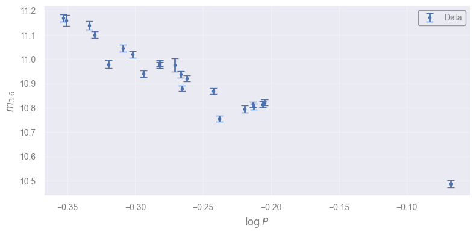
Quick Python code for fitting#
numpy.polyfitmethod for fitting polynomials
It actually performs an ordinary least squares fit, obviously without taking into account the uncertainties
scipy.optimize.minimizecan minimize any function
…so we can apply it to minimize the \(\chi^2\) (using the uncertainties). Note that the optimization method is selected because it’s not always successful
A trick
\(\chi^2\) fitting can be seen as a weighted version of ordinary least squares. The weights are applied on the unsquared residuals: \( w_i \left[y_i - \hat{y}(x_i)\right]\). By comparing with the \(\chi^2\) formula we can use \(1/\sigma_i\) as weights in
numpy.polyfitwhere \(\sigma_i\) are the uncertainties of each data point.
Tasks:
Make
np.polyfitworkSelect the initial guess for minimizing
chi_squareMake
np.polyfitwork with the correct weights
# ordinary least squares fit
ols_params = np.polyfit(logP, m36, deg=1)
print("Polyfit output:")
print(ols_params)
print()
# chi-square fitting using minimization
def chi_square(params):
"""Calculate the chi-square value for a given set of parameters."""
slope_for_chi, intercept_for_chi = params
m36_model = slope_for_chi * logP + intercept_for_chi
return np.sum((m36 - m36_model) ** 2.0 / e_m36**2.0)
initial_estimate = ols_params # use the OLS results as an initial estimate
min_result = minimize(chi_square, x0=initial_estimate, method="Nelder-Mead")
print("Minimization output:")
print(min_result)
print("Optimal Parameters:")
print(min_result.x)
# chi-square fitting using weighted OLS fit: w = 1/sigma here!
ch2_params = np.polyfit(logP, m36, deg=1, w=1.0/e_m36)
print()
print("chi-square fitting using weighted polyfit:")
print(ch2_params)
# plotting the results
OLS_LABEL = ("OLS:\t $m_{{3.6}} = "
f"{ols_params[0]:.3g} \\log P$ + {ols_params[1]:.3g}]")
CHI_LABEL = ("$\\chi^2$:\t $m_{{3.6}} = "
f"{ch2_params[0]:.3g} \\log P$ + {ch2_params[1]:.3g}]")
x_plot = np.linspace(np.min(logP), np.max(logP), 40)
plt.figure()
plt.errorbar(logP, m36, yerr=e_m36, fmt="b.", capsize=4, label="Data")
plt.plot(x_plot, np.polyval(ols_params, x_plot), "k-", lw=2, label=OLS_LABEL)
plt.plot(x_plot, np.polyval(ch2_params, x_plot), "r-", label=CHI_LABEL)
plt.legend(loc="upper right")
plt.xlabel(r"$\log P$")
plt.ylabel(r"$m_{3.6}$")
plt.show()
Polyfit output:
[-2.369672 10.29960037]
Minimization output:
message: Optimization terminated successfully.
success: True
status: 0
fun: 186.90598361947207
x: [-2.338e+00 1.030e+01]
nit: 34
nfev: 66
final_simplex: (array([[-2.338e+00, 1.030e+01],
[-2.338e+00, 1.030e+01],
[-2.338e+00, 1.030e+01]]), array([ 1.869e+02, 1.869e+02, 1.869e+02]))
Optimal Parameters:
[-2.33806527 10.30379998]
chi-square fitting using weighted polyfit:
[-2.33808939 10.30379338]
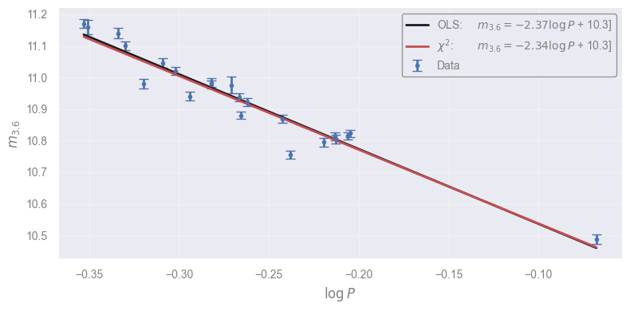
Constructing a likelihood function#
Our problem falls into the general case where we have a model connecting two quantities through a function with two parameters, \(a\) and \(b\): \(y=f(x;a,b)=ax + b\).
In the general case, we use \(\theta\) as a list of parameters: \(\theta = \{\theta_1, \theta_2, \cdots, \theta_k\}\):
Therefore, if we get \(N\) data, \((x_i, y_i)\) for \(i \in [1, 2, \cdots, N]\) based on the model we would expect:
However, all observations are subject to uncertainty, and we need to model this as well. More often than not, uncertainties are fluctuations of a certain magnitude \(\sigma\) around 0, following the Gaussian distribution:
where \(\epsilon_i\) is normally distributed:
The \(\sigma_i\) is the standard deviation of the datum error distribution, or an estimate of the typical difference between the observed \(y_i\) and the intrinsic, true value \(y_i\) which we assume that is described by the model.
Consequently, according to our model, the probability to observe the \(i\)-th point’s \(y\)-value given it’s \(x\)-value, or the datum likelihood is
Assuming that our measurements are independent (the probability of \(y_2\) does not depend on \(y_1\) or \(x_3\)), the overall probability to get our data, or likelihood (always according to our model) is the product of all likelihoods:
Let’s do the math…
The parameters that maximize the likelihood are found by taking
The log trick#
The likelihoods are typicall very small quantities. To avoid numerical issues, we are allowd to work in log-space (they are positive):
Not only it simplifies the equation, but it’s convenient for maximization with respect to any parameter \(\theta_j\):
Therefore, for our example we can maximizing the log-likelihood with respect to the two parameters:
Connection with \(\chi^2\)#
The \(l\) can be written as
Consequently, maximizing the likelihood is equivalent to minimizing the \(\chi^2\)!
If the uncertainties are equal…#
If \(\sigma_i \equiv \sigma\), then…
So maximizing the likelihood corresponds to minimizing the quantity
…or the sum of the squares!
In fact, using \(f(x) = a x + b\) you will arrive at the known OLS formulae for linear fitting without using linear algebra at all!
Let’s plot the likelihood close to the solution we found before#
Task
Complete the log_likelihood function.
# construct a 2D grid with 101 points in each direction
a_grid = np.sort(np.linspace(0.95 * ch2_params[0], 1.05 * ch2_params[0], 101))
b_grid = np.sort(np.linspace(0.997 * ch2_params[1], 1.003 * ch2_params[1], 101))
[A, B] = np.meshgrid(a_grid, b_grid)
# construct the likelihood function (and vectorize it to be applied directly on arrays)
@np.vectorize
def log_likelihood(a, b):
"""The log-likelihood function for the linear model."""
return -0.5 * chi_square([a, b])
ln_like = log_likelihood(A, B) # compute the likelihood in each grid point
ln_like = ln_like - np.max(ln_like) # normalizing it for the maximum to be 0.0
L = np.exp(ln_like) # un-log it to better visualization
# plot the results
plt.figure()
plt.contourf(A, B, L, 100, cmap='gnuplot2')
plt.plot(*ch2_params, "xk")
plt.xlabel("a")
plt.ylabel("b")
cbar = plt.colorbar(label=r"$L / L_{\max}$")
cbar.set_ticks(np.linspace(0, 1, 11))
plt.show()
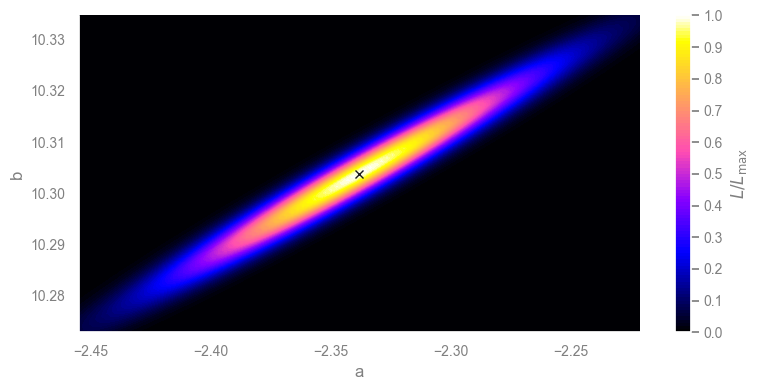
[Solution] (click here to expand)
As we saw above, the log-likelihood is connect to the \(\chi^2\) term. Therefore, we can use the function we created for this purpose:
return -0.5 * chi_square([a, b])
Exercise: fitting for slope only#
Let’s assume that in the above relation, the intercept \(b\) is known (it mainly depends on the distance of the objects, and a calibration of the relation):
In-class discussion: Can we fit the slope using standard methods for fitting a line (OLS)?
[Spoiler] (click here to expand)
We do not have an intercept any more. Even if we fit \(m-10.3\), we might end up with a small “remainder”. Even if we take the logs again, we would have \(\log(m-10.3) = \log a + \log\log P\) which requires fitting for the intercept only. Perhaps, \(a = (m - 10.3) / \log P\) is telling us that from each point we have an estimate of the slope and we could average them. But none of these approaches takes into account the uncertainties.
ols_params_1param = np.polyfit(logP, m36-10.3, deg=1)
a_1param, b_1param = ols_params_1param
print(f"Ordinary Least Squares result: a={a_1param:.3f}, b={b_1param:.3g}")
slope_estimates = (m36-10.3) / logP
mean_slope = np.mean(slope_estimates)
print(f"Average of slope estimates: a={mean_slope:.3f}")
Ordinary Least Squares result: a=-2.370, b=-0.0004
Average of slope estimates: a=-2.380
xx = np.linspace(np.min(logP), np.max(logP), 40)
plt.figure()
plt.errorbar(logP, m36, yerr=e_m36, fmt="b.", capsize=4, label="Data")
plt.plot(xx, 10.3 + np.polyval(ols_params_1param, xx), "k-", lw=2,
label=f"OLS: $m_{{3.6}}$-10.3={a_1param:.3g} $\\log P$ {b_1param:.3g}")
plt.plot(xx, 10.3 + mean_slope * xx, "r-",
label=f"$\\bar{{a}}$: $m_{{3.6}} - 10.3 = ${mean_slope:.3g} $\\log P$")
plt.legend(loc="upper right")
plt.xlabel(r"$\log P$")
plt.ylabel(r"$m_{3.6}$")
plt.show()
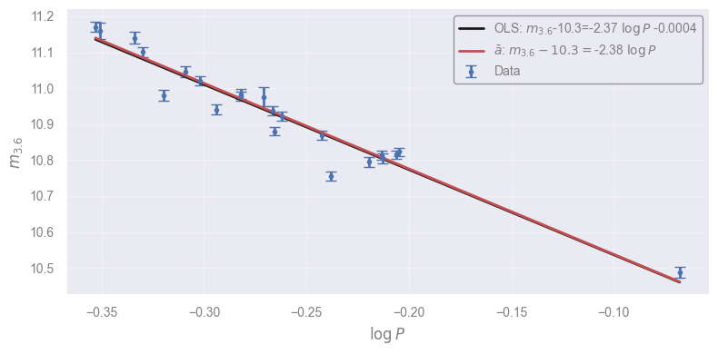
In-class discussion: Can we fit the slope using \(\chi^2\)-fitting?
[Spoiler] (click here to expand)
Sure! This includes the uncertainties, and we are using directly the likelihood we want.
chi2_min_result = minimize(lambda a: np.sum((m36-10.3-a*logP)**2.0 / e_m36**2.0), x0=mean_slope)
print(f"Chi-square minimization estimate: a={chi2_min_result.x[0]:.3f}")
Chi-square minimization estimate: a=-2.352
In-class discussion: What is the uncertainty on the slope?
[Spoiler] (click here to expand)
Most methods (OLS, $\chi^2$) have ways to get the uncertainties of the parameters. These are based on Gaussian approximations of the likelihood itself! Here we have the likelihood, why not use it?
Plotting the (log-)likelihood#
def log_likelihood_1param(slope):
"""The log-likelihood for a fit with fixed intercept at 10.3."""
return -0.5*np.sum((m36-10.3 - slope*logP)**2.0 / e_m36**2.0)
# the slope values to try
a_values = a_grid.copy()
# the corresponding log-likelihood values
ln_like_values = np.array([log_likelihood_1param(a_value) for a_value in a_values])
# the likelihood values, normalized to 1
L_values = np.exp(ln_like_values - np.max(ln_like_values))
fig, (ax1, ax2) = plt.subplots(1, 2, sharex=True, figsize=(10, 3))
ax1.plot(a_values, ln_like_values, "k-")
ax2.plot(a_values, L_values, "k-")
ax1.set_ylabel(r"$\ln L$")
ax2.set_ylabel(r"$L$")
for ax in [ax1, ax2]:
ax.set_xlabel("Slope, $a$")
plt.show()
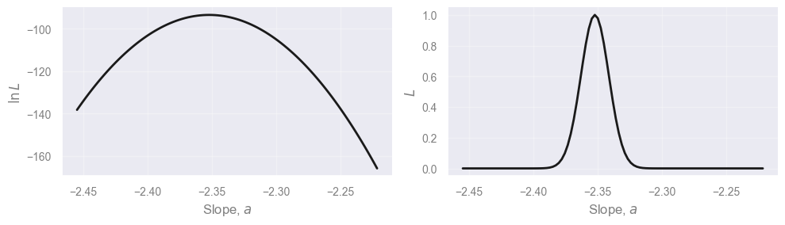
Estimating the uncertainty through the CDF#
What does the uncertainty on the slope mean? The likelihood function gives all the information. Sigma values, upper and lower limits, are simply summarizing the likelihood using 1-2 values.
We can define as 68% confidence interval on the slope, the region around the median, where the area under the (properly normalized) likelihood is 68%:
where \(lo\) and \(hi\) are the lower and upper bounds of the CI. Since we defined the CI as something around the median, this implies that the \(lo\) and \(up\) values correspond to the 16 and 84 percentiles. Therefore:
This is why the cumulative density function (CDF) is very useful! We can obtain the CDF by integrating the likelihood:
We have calculated \(f(x)\) on a regular and fine grid of \(x\): \(\Delta x\) is constant and a small value. Consequently, the integral calculated in the same grid, is simply the cumulative sum of the likelihood values in the grid. Of course, we need to normalize it so that the CDF goes from 0 to 1 (- to +infinity). Since we started with a wide range of \(x\) (including most of the area of the likelihood), we can assume that the CDF goes from 0 to 1 in our grid.
cdf = np.cumsum(L_values)
cdf /= cdf[-1]
plt.figure()
plt.plot(a_values, cdf, "k.")
plt.xlabel("Slope, $a$")
plt.ylabel("Cumulative Distribution Function")
plt.show()
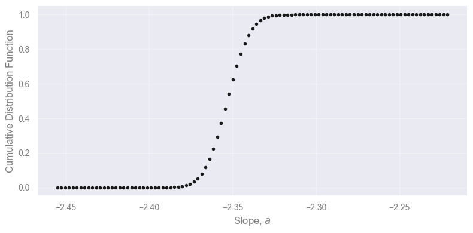
Finding the confidence interval#
The CDF calculated in the grid is a series of point. To find the value at which the CDF is say, 0.16, we can use interpolation! But not the typical one where we interpolate \(y\) values from \(x\) values, but the opposite!
Task Use interpolation to find the confidence interval and the median of the slope.
lo68, median, hi68 = np.interp(..., ..., ...)
print(f"Slope = {median:.3f} +{hi68-median:.3f} -{median-lo68:.3f}")
plt.figure()
plt.axhspan(0.16, 0.84, facecolor="0.75", alpha=0.5, edgecolor="none")
plt.axvspan(lo68, hi68, facecolor="r", alpha=0.5, edgecolor="none")
plt.axvline(median, color="r")
plt.axhline(0.50, color="0.5", ls="-")
plt.plot(a_values, cdf, "k-")
plt.show()
---------------------------------------------------------------------------
ValueError Traceback (most recent call last)
Cell In[18], line 1
----> 1 lo68, median, hi68 = np.interp(..., ..., ...)
2 print(f"Slope = {median:.3f} +{hi68-median:.3f} -{median-lo68:.3f}")
4 plt.figure()
File ~/miniforge3/lib/python3.12/site-packages/numpy/lib/_function_base_impl.py:1664, in interp(x, xp, fp, left, right, period)
1661 xp = np.concatenate((xp[-1:] - period, xp, xp[0:1] + period))
1662 fp = np.concatenate((fp[-1:], fp, fp[0:1]))
-> 1664 return interp_func(x, xp, fp, left, right)
ValueError: object of too small depth for desired array
[Solution] (click here to expand)
We need to calculate the slope values (\(a\) values) for which the CDF evaluates to 0.16 (lower bound of the 68% confidence interval), 0.5 (median) and 0.84 (upper bound):
lo68, median, hi68 = np.interp([0.16, 0.50, 0.84], cdf, a_values)
Full solution (complete, runnable code)
lo68, median, hi68 = np.interp([0.16, 0.50, 0.84], cdf, a_values)
print(f"Slope = {median:.3f} +{hi68-median:.3f} -{median-lo68:.3f}")
plt.figure()
plt.axhspan(0.16, 0.84, facecolor="0.75", alpha=0.5, edgecolor="none")
plt.axvspan(lo68, hi68, facecolor="r", alpha=0.5, edgecolor="none")
plt.axvline(median, color="r")
plt.axhline(0.50, color="0.5", ls="-")
plt.plot(a_values, cdf, "k-")
plt.show()
Slope = -2.353 +0.011 -0.011
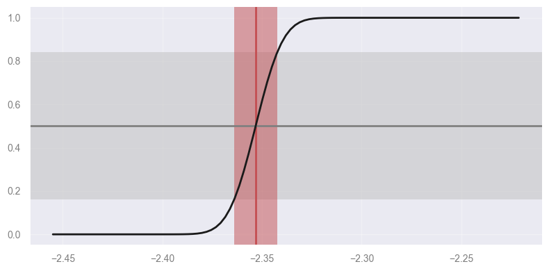
Additional considerations#
The grid is not necessary. We can directly calculate any percentile by defining the CDF as a function that integrates (e.g., with
scipy.integrate), and then using root finders or minimizers (e.g., withscipy.optimize), find the value for which it gives 0.16 or 0.84!We can directly use the likelihood to calculate other statistics using formulas applied on distribution functions (don’t forget to normalize your likelihood!):
Mean: \( \mu = \int\limits_{-\infty}^{+\infty} x L(x)\, dx\)
Variance: \(\text{Var} = \int\limits_{-\infty}^{+\infty} \left(x - \mu\right)^2 L(x) dx\)
Standard deviation: \(\sigma = \sqrt{\text{Var}}\)
…and so on! It involves integrations that are typically easy to calculate with standard methods.
Fitting a spectral line using MLE#
Astrophysics loves spectra since extracting features from them is extremely informative regarding the physical processes of astronomical objects.
In this example we’ll try to fit the LiI spectral line using a stellar spectrum.
spectrum = np.load("data/lithium_line_example.npy")
fig, (ax_all, ax_zoom) = plt.subplots(1, 2, figsize=(12, 4))
ax_all.plot(spectrum['wavelength'], spectrum['flux'])
ax_zoom.errorbar(spectrum['wavelength'], spectrum['flux'],
yerr=spectrum['flux_error'], fmt='. ')
ax_zoom.set_xlim(6705, 6709)
ax_zoom.set_ylim(1200, 2700)
ax_all.set_title("All data")
ax_zoom.set_title("Zoomed in on the lithium line")
for ax in [ax_all, ax_zoom]:
ax.set_xlabel(r'Wavelength ($\AA$)')
ax_all.set_ylabel('Counts')
plt.show()
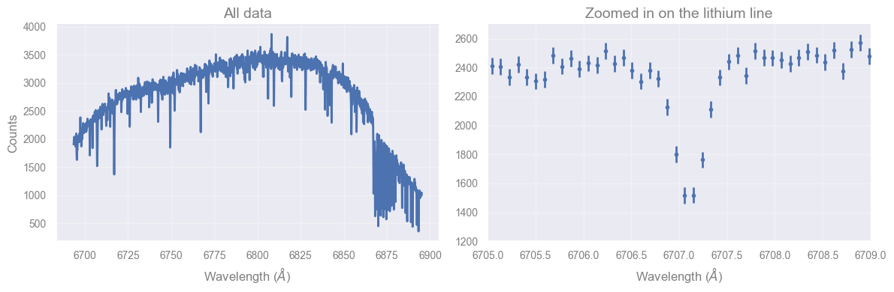
Let’s focus on the lithium line#
lithium_line = spectrum[spectrum['wavelength'] > 6705]
lithium_line = lithium_line[lithium_line['wavelength'] < 6709]
plt.errorbar(lithium_line['wavelength'], lithium_line['flux'],
yerr=lithium_line['flux_error'],
fmt=' .')
plt.xlabel(r'Wavelength ($\AA$)')
plt.ylabel('Counts')
plt.show()
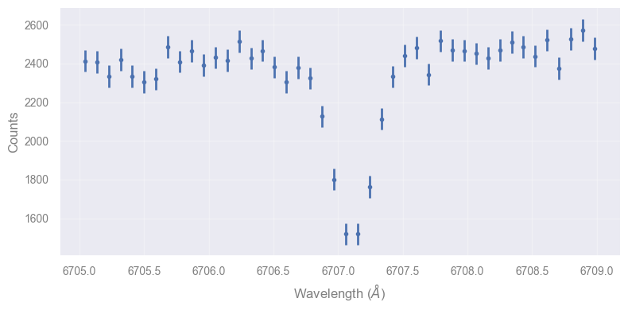
Let’s start by describing our model: a linear continuum plus a Gaussian absorption feature#
Tasks
Create the model: continuum + Gaussian line
Decide the return value of
ln_likelihoodfor values outside the permitted ranges of the parametersComplete the
ln_likelihoodfunction
def model_flux(p, wavelength):
"""Return the flux for our model.
Arguments
---------
p : tuple
The model parameters
wavelength : float
The input wavelength(s) at which we wish to calculate our model
Returns
-------
flux : float
The model flux(es) calculated by our model
"""
# You can unpack the parameters if you want to use them by name
# m, b, c, sigma, loc = p
linear_part = m * (wavelength - 6707) + b
gaussian_part = ...
return linear_part + gaussian_part
def ln_likelihood(p, data):
"""Return the likelihood of our model.
Arguments
---------
p : tuple
The model parameters
data : ndarray
The observed data from which we wish to calculate the likelihood of our model
Returns
-------
ln_likelihood : float
The log likelihood of our model
"""
m, b, c, sigma, loc = p
if sigma <= 0:
return ...
if loc < 6706 or loc > 6708:
return ...
# First, calculate the model fluxes at the observed wavelengths
model_fluxes = model_flux(p, data['wavelength'])
# Now capture our observed fluxes
observed_fluxes = data['flux']
observed_flux_errors = data['flux_error']
# Compare the two
ln_likelihood = ...
return sum(ln_likelihood)
def neg_ln_likelihood(p, data):
"""Wrapper for ln_likelihood to return the negative of the log likelihood.
Arguments
---------
p : tuple
The model parameters
data : ndarray
The observed data from which we wish to calculate the likelihood of our model
Returns
-------
neg_ln_likelihood : float
The negative of the log likelihood of our model
"""
return -ln_likelihood(p, data)
[Solution] (click here to expand)
In the model that describes the fluxes, we add a Gaussian absorption feature
(therefore we subtract the normalization factor c), the shape of which is
conveniently given by the st.norm.pdf function that takes as an input the
x values to be applied to, the location of the mean (loc), and the standard
deviation (sigma):
gaussian_part = -c * st.norm.pdf(wavelength, loc=loc, scale=sigma)
In the log-likelihood function we treat “illegal values/ranges”. The standard deviation cannot be 0 or negative, or the location should be in the expected range (to constrain the search to this line). In these cases, the likelihood is 0, and therefore the log-likelihood is \(-\infty\):
if sigma <= 0:
return -np.inf
if loc < 6706 or loc > 6708:
return -np.inf
Meanwhile, the overall likelihood function return the values expressed in the equation we saw earlier: the constant term (can be omitted) containing the flux errors, and the \(\chi^2\) term that compares the observed fluxes with the modeled ones:
ln_likelihood = (
-np.log(observed_flux_errors * np.sqrt(2*np.pi))
- (model_fluxes - observed_fluxes)**2 / (2 * observed_flux_errors**2)
)
Full solution (complete, runnable code)
def model_flux(p, wavelength):
"""Return the flux for our model.
Arguments
---------
p : tuple
The model parameters
wavelength : float
The input wavelength(s) at which we wish to calculate our model
Returns
-------
flux : float
The model flux(es) calculated by our model
"""
# Unpack the parameters to use them by name
m, b, c, sigma, loc = p
linear_part = m * (wavelength - 6707) + b
gaussian_part = -c * st.norm.pdf(wavelength, loc=loc, scale=sigma)
return linear_part + gaussian_part
def ln_likelihood(p, data):
"""Return the likelihood of our model.
Arguments
---------
p : tuple
The model parameters
data : ndarray
The observed data from which we wish to calculate the likelihood of our model
Returns
-------
ln_likelihood : float
The log likelihood of our model
"""
m, b, c, sigma, loc = p
if sigma <= 0:
return -np.inf
if loc < 6706 or loc > 6708:
return -np.inf
# First, calculate the model fluxes at the observed wavelengths
model_fluxes = model_flux(p, data['wavelength'])
# Now capture our observed fluxes
observed_fluxes = data['flux']
observed_flux_errors = data['flux_error']
# Compare the two
ln_likelihood = (
-np.log(observed_flux_errors * np.sqrt(2*np.pi))
- (model_fluxes - observed_fluxes)**2 / (2 * observed_flux_errors**2)
)
return sum(ln_likelihood)
def neg_ln_likelihood(p, data):
"""Wrapper for ln_likelihood to return the negative of the log likelihood.
Arguments
---------
p : tuple
The model parameters
data : ndarray
The observed data from which we wish to calculate the likelihood of our model
Returns
-------
neg_ln_likelihood : float
The negative of the log likelihood of our model
"""
return -ln_likelihood(p, data)
Let’s start with a trial solution and use scipy minimize to find a solution#
INITIAL_M = 40
INITIAL_B = 2400
INITIAL_C = 400
INITIAL_SIGMA = 0.2
INITIAL_LOC = 6707.1
p0 = (INITIAL_M, INITIAL_B, INITIAL_C, INITIAL_SIGMA, INITIAL_LOC)
model_wavelengths = np.linspace(np.min(lithium_line['wavelength']),
np.max(lithium_line['wavelength']), 1000)
model_fluxes = model_flux(p0, model_wavelengths)
plt.plot(model_wavelengths, model_fluxes, color='C1')
plt.errorbar(lithium_line['wavelength'], lithium_line['flux'],
yerr=lithium_line['flux_error'],
fmt='.', capsize=2)
plt.xlabel(r'Wavelength ($\AA$)')
plt.ylabel('Counts')
plt.show()
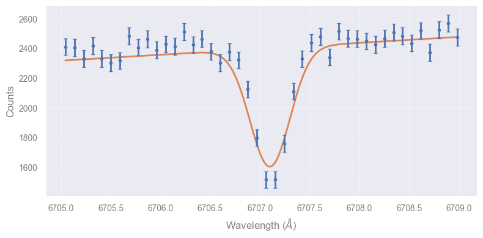
res = minimize(neg_ln_likelihood, p0, method='Nelder-Mead', args=lithium_line)
m_sol, b_sol, c_sol, sigma_sol, loc_sol = res.x
print(f"Best-fit parameters: m={m_sol:.3f}, b={b_sol:.3f}, c={c_sol:.3f}, "
f"sigma={sigma_sol:.3f}, loc={loc_sol:.3f}")
best_p = res.x
model_wavelengths = np.linspace(np.min(lithium_line['wavelength']),
np.max(lithium_line['wavelength']), 1000)
model_fluxes = model_flux(best_p, model_wavelengths)
plt.figure()
plt.plot(model_wavelengths, model_fluxes, color='C1')
plt.errorbar(lithium_line['wavelength'], lithium_line['flux'],
yerr=lithium_line['flux_error'],
fmt='.', capsize=2)
plt.xlabel(r'Wavelength ($\AA$)')
plt.ylabel('Counts')
plt.show()
Best-fit parameters: m=29.043, b=2435.356, c=374.253, sigma=0.155, loc=6707.109
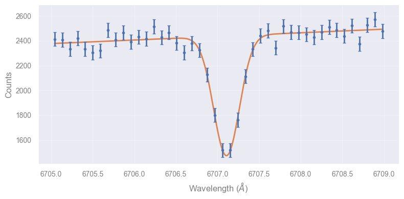
How does the likelihood vary with model parameters?#
Let’s see how the likelihood will vary with the the model parameters
fig, axes = plt.subplots(1, 5, figsize=(12, 4), constrained_layout=True)
labels = ['m', 'b', 'c', r'$\sigma$', r'$\mu$']
width_perc = [0.8, 0.01, 0.1, 0.12, 0.000003]
for j, (label, ax) in enumerate(zip(labels, axes)):
# get the best-fitting values
trial_p = best_p.copy()
# take a range around the j-th parameter's best-fiting value
test_set = best_p[j] * np.linspace(1 - width_perc[j], 1 + width_perc[j], 1000)
# get the log-likelihood for the different values (keeping fixed the rest of the parameters)
ll = np.zeros_like(test_set)
for i, test_val in enumerate(test_set):
trial_p[j] = test_val
ll[i] = ln_likelihood(trial_p, lithium_line)
ax.plot(test_set, ll)
ax.axvline(best_p[j], color='k', linestyle='dashed')
ax.set_title(labels[j])
ax.grid()
axes[0].set_ylabel(r'$\ln \mathcal{L}$')
plt.show()
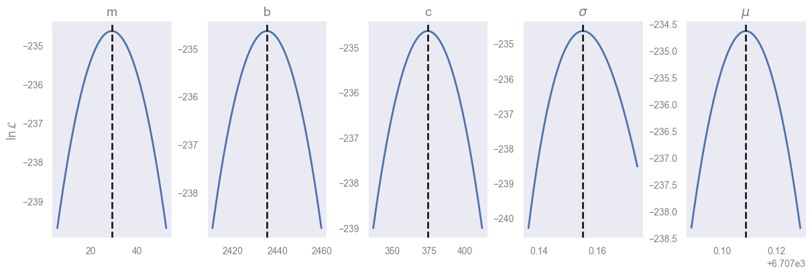
###EOF